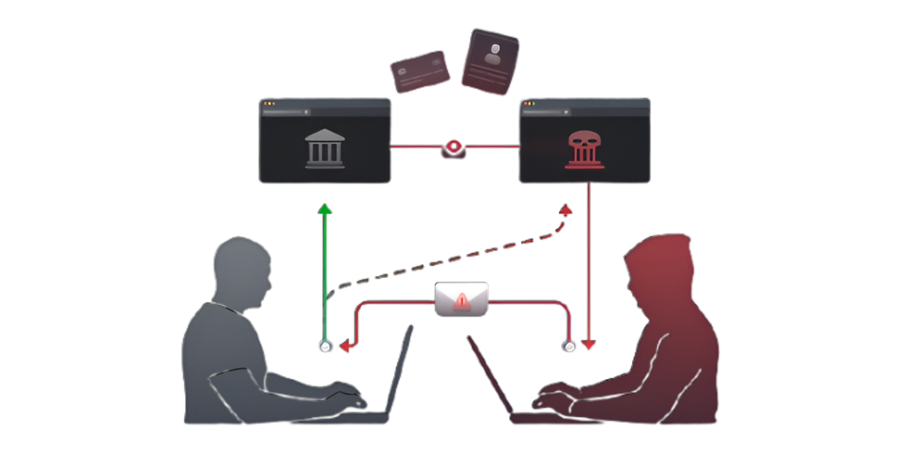

This page is designed to help you understand Cross-Site Scripting (XSS) and Cross-Site Request Forgery (CSRF) vulnerabilities. Through simple, interactive examples, you'll learn how attackers exploit insecure web applications using these techniques, and how developers can safeguard their code against such threats. This site offers a practical overview for students, developers, and security enthusiasts aiming to deepen their knowledge of web-based attack vectors and defense mechanisms.
Cross-Site Scripting (XSS) is a widespread and dangerous security vulnerability that occurs when a web application allows untrusted data—typically user input—to be injected into web pages without proper validation or sanitization. When this malicious input is rendered as executable code in the browser, attackers can manipulate how the page behaves for other users who view it.
XSS exploits the trust a user places in a website. By injecting malicious JavaScript code, attackers can cause a range of harmful outcomes:
Cross-Site Request Forgery (CSRF) is a deceptive and dangerous web security vulnerability that enables attackers to impersonate a trusted user by exploiting their authenticated session. When a user is logged into a web application, their browser automatically includes authentication credentials (like cookies or session tokens) with every request. CSRF attacks take advantage of this behavior to trick the browser into submitting unauthorized requests without the user's awareness or intention.
Attackers can exploit CSRF vulnerabilities to: